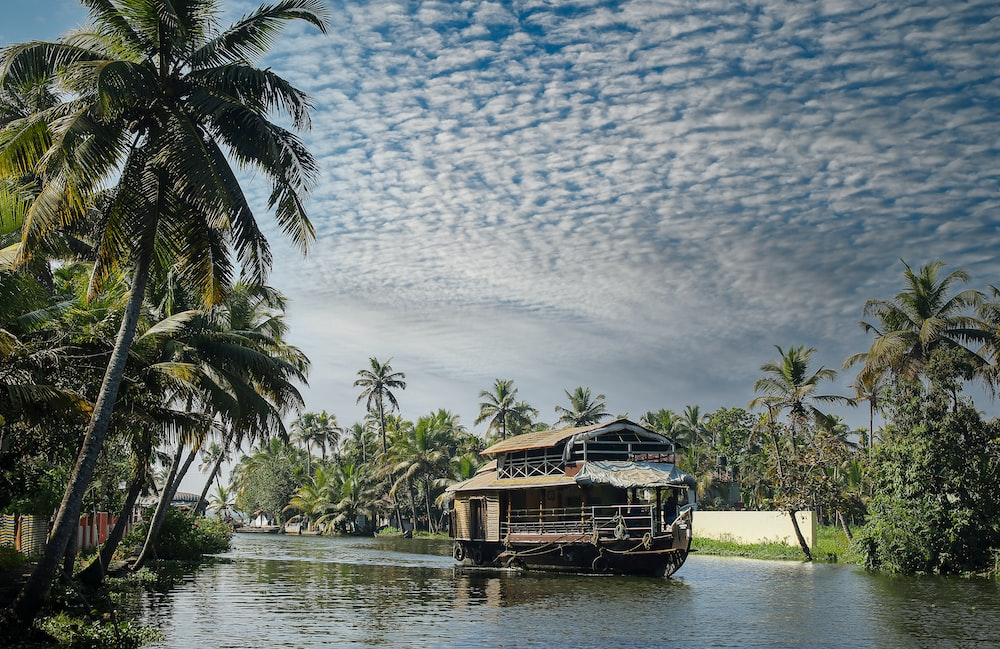
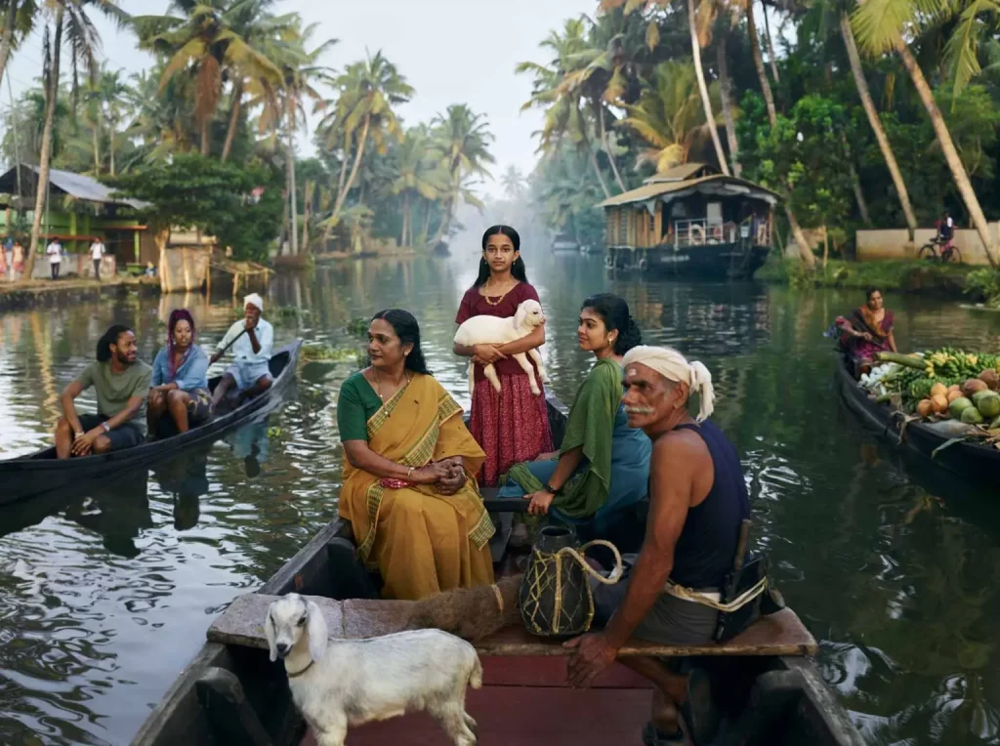

Rich in history, Kasaragod is home to the largest and best preserved fort in the State - Bekal. The historic Malik Deenar Mosque and the unique Ananthapura Lake Temple display a variety of styles in traditional architecture.
Explore
Kannur is famous for its beaches, lush green forests, and temples. The place is often termed as one of the perfect places for a vacation. Also, Kannur is known for its culture and history. Kannur has a historical significance as it was the part of Chera dynasty that ruled Kerala.
Explore
This popular town is famous for wildlife and its spice plantations. Wayanad is part of a forest reserve, located on the border of Tamil Nadu and Kerala. Because of it wild green coverage it offers great scenic beauty along with the experience of seeing wildlife.
Explore
Kozhikode is the largest urban area in the state and 195th largest urban area in the world. During classical antiquity and the Middle Ages, Kozhikode was dubbed the “City of Spices” for its role as the major trading point of Eastern spices.
Explore
Malappuram has made numerous contributions to the cultural heritage of Kerala. A famous centre for Hindu-Vedic learning and Islamic philosophy, the temples and mosques of this region are well known for their spectacular festivals.
Explore
Palakkad is famous for the ancient Palakkad Fort, which is situated at the heart of the city and was captured and rebuilt by Hyder Ali in 1766. The city is situated about 347 kilometres (216 mi) northeast of the state capital Thiruvananthapuram.
Explore
Thrissur is known as the cultural capital of Kerala, and the land of Poorams. The district is known for its ancient temples, churches, and mosques. Thrissur Pooram is the most colourful temple festival in Kerala.
Explore
Ernakulam is the first district in India to have 100 percent literacy by 1990. In fact Kochi has the highest literacy rate for any city in the country with over 20 lakhs population. Pothanikkad is the first village in India that achieved 100 percent literacy according to state literacy programme is in this district.
Explore
This rugged hill resort is known for its wildlife sanctuaries, beautiful bungalows, tea factories, rubber plantations and forests. Idukki's speciality lies in 650 feet long and 550 feet high arch dam across the Kuravan Kurathi mountain, which is the largest in the country.
Explore
Kottayam is also called as “Akshara Nagari” which means the “city of letters” considering its contribution to print media and literature. Kottayam Town is the first town in India to have achieved 100% literacy (a remarkable feat achieved as early as in 1989).
Explore
Alappuzha, famous for its boat races, beaches, marine products and coir industry, is a world renowned backwater tourist destination of India. Kuttanad, Alappuzha backwaters and Alappuzha beach are the must-see tourist attractions in the district.
Explore
Situated near the Western Ghats and bordered by the hills, Pathanamthitta district is a treat to eyes with its vast unending stretches of forests, rivers and rural landscapes. Blessed by nature, the district is famous for its scenic beauty, fairs and festivals.
ExploreKollam is the capital of Kerala's cashew industry. Plains, mountains, lakes, lagoons, and backwaters, forests, farmland and rivers make up the topography of the district. The area had trading relationships with Phoenicia and Ancient Rome.
Explore
Thiruvananthapuram is also home to research centers such as the National Institute for Interdisciplinary Science and Technology, Indian Space Research Organisation's Vikram Sarabhai Space Centre, the Indian Institute of Space Science and Technology, National Centre for Earth Science Studies
Explore